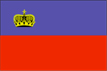
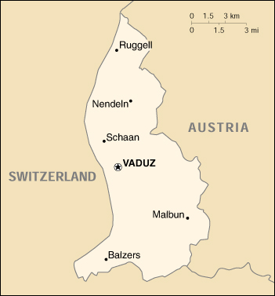

{kind=link}


| Liechtenstein |  |
|
|  | |
| Introduction |
Background: The Principality of Liechtenstein was established within the Holy Roman Empire in 1719; it became a sovereign state in 1806. Until the end of World War I, it was closely tied to Austria, but the economic devastation caused by that conflict forced Liechtenstein to conclude a customs and monetary union with Switzerland. Since World War II (in which Liechtenstein remained neutral) the country's low taxes have spurred outstanding economic growth.
| Geography |
Location: Central Europe, between Austria and Switzerland
Geographic coordinates: 47 10 N, 9 32 E
Map references: Europe
Area:
total:
160 sq km
land:
160 sq km
water:
0 sq km
Area - comparative: about 0.9 times the size of Washington, DC
Land boundaries:
total:
76 km
border countries:
Austria 35 km, Switzerland 41 km
Coastline: 0 km (landlocked)
Maritime claims: none (landlocked)
Climate: continental; cold, cloudy winters with frequent snow or rain; cool to moderately warm, cloudy, humid summers
Terrain: mostly mountainous (Alps) with Rhine Valley in western third
Elevation extremes:
lowest point:
Ruggeller Riet 430 m
highest point:
Grauspitz 2,599 m
Natural resources: hydroelectric potential, arable land
Land use:
arable land:
24%
permanent crops:
0%
permanent pastures:
16%
forests and woodland:
35%
other:
25% (1993 est.)
Irrigated land: NA sq km
Natural hazards: NA
Environment - current issues: NA
Environment - international agreements:
party to:
Air Pollution, Air Pollution-Nitrogen Oxides, Air Pollution-Sulphur 85, Air Pollution-Sulphur 94, Air Pollution-Volatile Organic Compounds, Biodiversity, Climate Change, Endangered Species, Hazardous Wastes, Ozone Layer Protection, Wetlands
signed, but not ratified:
Air Pollution-Persistent Organic Pollutants, Climate Change-Kyoto Protocol, Law of the Sea
Geography - note: along with Uzbekistan, one of only two doubly landlocked countries in the world; variety of microclimatic variations based on elevation
| People |
Population: 32,207 (July 2000 est.)
Age structure:
0-14 years:
18% (male 2,970; female 2,988)
15-64 years:
71% (male 11,379; female 11,370)
65 years and over:
11% (male 1,393; female 2,107) (2000 est.)
Population growth rate: 1.02% (2000 est.)
Birth rate: 11.83 births/1,000 population (2000 est.)
Death rate: 6.64 deaths/1,000 population (2000 est.)
Net migration rate: 5.03 migrant(s)/1,000 population (2000 est.)
Sex ratio:
at birth:
1.04 male(s)/female
under 15 years:
0.99 male(s)/female
15-64 years:
1 male(s)/female
65 years and over:
0.66 male(s)/female
total population:
0.96 male(s)/female (2000 est.)
Infant mortality rate: 5.07 deaths/1,000 live births (2000 est.)
Life expectancy at birth:
total population:
78.81 years
male:
75.16 years
female:
82.47 years (2000 est.)
Total fertility rate: 1.49 children born/woman (2000 est.)
Nationality:
noun:
Liechtensteiner(s)
adjective:
Liechtenstein
Ethnic groups: Alemannic 87.5%, Italian, Turkish, and other 12.5%
Religions: Roman Catholic 80%, Protestant 7.4%, unknown 7.7%, other 4.9% (1996)
Languages: German (official), Alemannic dialect
Literacy:
definition:
age 10 and over can read and write
total population:
100%
male:
100%
female:
100% (1981 est.)
| Government |
Country name:
conventional long form:
Principality of Liechtenstein
conventional short form:
Liechtenstein
local long form:
Fuerstentum Liechtenstein
local short form:
Liechtenstein
Data code: LS
Government type: hereditary constitutional monarchy
Capital: Vaduz
Administrative divisions: 11 communes (Gemeinden, singular - Gemeinde); Balzers, Eschen, Gamprin, Mauren, Planken, Ruggell, Schaan, Schellenberg, Triesen, Triesenberg, Vaduz
Independence: 23 January 1719 Imperial Principality of Liechtenstein established; 12 July 1806 established independence from the Holy Roman Empire
National holiday: Assumption Day, 15 August
Constitution: 5 October 1921
Legal system: local civil and penal codes; accepts compulsory ICJ jurisdiction, with reservations
Suffrage: 20 years of age; universal
Executive branch:
chief of state:
Prince HANS ADAM II (since 13 November 1989, assumed executive powers 26 August 1984); Heir Apparent Prince ALOIS von und zu Liechtenstein, son of the monarch (born 11 June 1968)
head of government:
Head of Government Mario FRICK (since 15 December 1993) and Deputy Head of Government Michael RITTER (since 2 February 1997)
cabinet:
Cabinet elected by the Diet; confirmed by the monarch
elections:
none; the monarch is hereditary; following legislative elections, the leader of the majority party in the Diet is usually appointed the head of government by the monarch and the leader of the largest minority party in the Diet is usually appointed the deputy head of government by the monarch
Legislative branch:
unicameral Diet or Landtag (25 seats; members are elected by direct popular vote under proportional representation to serve four-year terms)
elections:
last held on 2 February 1997 (next to be held by NA 2001)
election results:
percent of vote by party - VU 50.1%, FBPL 41.3%, FL 8.5%; seats by party - VU 13, FBPL 10, FL 2
Judicial branch: Supreme Court or Oberster Gerichtshof; Superior Court or Obergericht
Political parties and leaders: Fatherland Union or VU [Dr. Oswald KRANZ]; Progressive Citizens' Party or FBPL [Norbert SEEGER]; The Free List or FL [Christel HILTI, Hansjorg HILTI, Helen MARXER, Hugo RISCH, Margrit WILLE]
International organization participation: CE, EBRD, ECE, EFTA, IAEA, ICRM, IFRCS, Intelsat, Interpol, IOC, ITU, OPCW, OSCE, PCA, UN, UNCTAD, UPU, WCL, WIPO, WTrO
Diplomatic representation in the US: Liechtenstein does not have an embassy in the US, but is represented by the Swiss embassy in routine diplomatic matters
Diplomatic representation from the US: the US does not have an embassy in Liechtenstein, but the US Ambassador to Switzerland is also accredited to Liechtenstein
Flag description: two equal horizontal bands of blue (top) and red with a gold crown on the hoist side of the blue band
| Economy |
Economy - overview: Despite its small size and limited natural resources, Liechtenstein has developed into a prosperous, highly industrialized, free-enterprise economy with a vital financial service sector and living standards on a par with the urban areas of its large European neighbors. Low business taxes - the maximum tax rate is 18% - and easy incorporation rules have induced about 73,700 holding or so-called letter box companies to establish nominal offices in Liechtenstein, providing 30% of state revenues. The country participates in a customs union with Switzerland and uses the Swiss franc as its national currency. It imports more than 90% of its energy requirements. Liechtenstein has been a member of the European Economic Area (an organization serving as a bridge between European Free Trade Association (EFTA) and EU) since May 1995. The government is working to harmonize its economic policies with those of an integrated Europe.
GDP: purchasing power parity - $730 million (1998 est.)
GDP - real growth rate: NA%
GDP - per capita: purchasing power parity - $23,000 (1998 est.)
GDP - composition by sector:
agriculture:
NA%
industry:
NA%
services:
NA%
Population below poverty line: NA%
Household income or consumption by percentage share:
lowest 10%:
NA%
highest 10%:
NA%
Inflation rate (consumer prices): 0.5% (1997 est.)
Labor force: 22,891 of which 13,847 are foreigners; 8,231 commute from Austria and Switzerland to work each day
Labor force - by occupation: industry, trade, and building 45%, services 53%, agriculture, fishing, forestry, and horticulture 2% (1997 est.)
Unemployment rate: 1.8% (February 1999)
Budget:
revenues:
$424.2 million
expenditures:
$414.1 million, including capital expenditures of $NA (1998 est.)
Industries: electronics, metal manufacturing, textiles, ceramics, pharmaceuticals, food products, precision instruments, tourism
Industrial production growth rate: NA%
Electricity - production: 150 million kWh (1995)
Electricity - production by source:
fossil fuel:
NA%
hydro:
NA%
nuclear:
NA%
other:
NA%
Electricity - consumption: NA kWh
Electricity - exports: NA kWh
Electricity - imports: NA kWh
Agriculture - products: wheat, barley, corn, potatoes; livestock, dairy products
Exports: $2.47 billion (1996)
Exports - commodities: small specialty machinery, dental products, stamps, hardware, pottery
Exports - partners: EU and EFTA countries 60.57% (Switzerland 15.7%) (1995)
Imports: $917.3 million (1996)
Imports - commodities: machinery, metal goods, textiles, foodstuffs, motor vehicles
Imports - partners: EU countries, Switzerland (1996)
Debt - external: $0 (1996)
Economic aid - recipient: none
Currency: 1 Swiss franc, franken, or franco (SFR) = 100 centimes, rappen, or centesimi
Exchange rates: Swiss francs, franken, or franchi (SFR) per US$1 - 1.5878 (January 2000), 1.5022 (1999), 1.4498 (1998), 1.4513 (1997), 1.2360 (1996), 1.1825 (1995)
Fiscal year: calendar year
| Communications |
Telephones - main lines in use: 19,000 (1995)
Telephones - mobile cellular: NA
Telephone system:
automatic telephone system
domestic:
NA
international:
linked to Swiss networks by cable and microwave radio relay
Radio broadcast stations: AM 0, FM 4, shortwave 0 (1998)
Radios: 21,000 (1997)
Television broadcast stations: NA (linked to Swiss networks) (1997)
Televisions: 12,000 (1997)
Internet Service Providers (ISPs): 115 (Liechtenstein and Switzerland) (1999)
| Transportation |
Railways:
total:
18.5 km; note - owned, operated, and included in statistics of Austrian Federal Railways
standard gauge:
18.5 km 1.435-m gauge (electrified)
Highways:
total:
250 km
paved:
250 km
unpaved:
0 km
Ports and harbors: none
Airports: none
| Military |
Military - note: defense is the responsibility of Switzerland
| Transnational Issues |
Disputes - international: claims 1,600 sq km of land in the Czech Republic confiscated from its royal family in 1918; the Czech Republic insists that restitution does not go back before February 1948, when the communists seized power